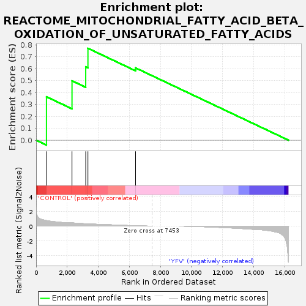
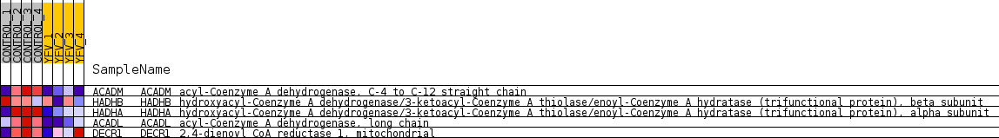
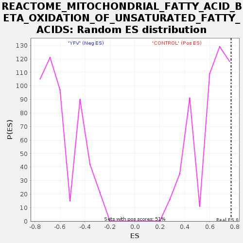

| Dataset | MATRIZ_GSE99081_collapsed_to_symbols.gsea_CLASE_99081.cls#CONTROL_versus_YFV |
| Phenotype | gsea_CLASE_99081.cls#CONTROL_versus_YFV |
| Upregulated in class | CONTROL |
| GeneSet | REACTOME_MITOCHONDRIAL_FATTY_ACID_BETA_OXIDATION_OF_UNSATURATED_FATTY_ACIDS |
| Enrichment Score (ES) | 0.77036566 |
| Normalized Enrichment Score (NES) | 1.2858007 |
| Nominal p-value | 0.07465619 |
| FDR q-value | 0.97443706 |
| FWER p-Value | 1.0 |

| SYMBOL | TITLE | RANK IN GENE LIST | RANK METRIC SCORE | RUNNING ES | CORE ENRICHMENT | |
|---|---|---|---|---|---|---|
| 1 | ACADM | acyl-Coenzyme A dehydrogenase, C-4 to C-12 straight chain | 666 | 0.757 | 0.3642 | Yes |
| 2 | HADHB | hydroxyacyl-Coenzyme A dehydrogenase/3-ketoacyl-Coenzyme A thiolase/enoyl-Coenzyme A hydratase (trifunctional protein), beta subunit | 2310 | 0.439 | 0.4979 | Yes |
| 3 | HADHA | hydroxyacyl-Coenzyme A dehydrogenase/3-ketoacyl-Coenzyme A thiolase/enoyl-Coenzyme A hydratase (trifunctional protein), alpha subunit | 3192 | 0.321 | 0.6154 | Yes |
| 4 | ACADL | acyl-Coenzyme A dehydrogenase, long chain | 3335 | 0.306 | 0.7704 | Yes |
| 5 | DECR1 | 2,4-dienoyl CoA reductase 1, mitochondrial | 6399 | 0.046 | 0.6061 | No |

